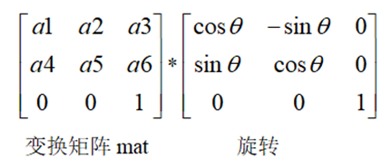
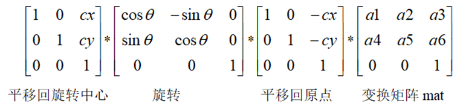

|
类型 |
变换 |
|
描述 |
向2D变换矩阵中追加旋转变换 旋转变换追加到变换矩阵mat中的方式有两种：不同的追加方式，变换性质不一样。 1. 一种是追加到mat后面，相当于旋转矩阵右乘mat，此时相对于在局部坐标系中执行旋转，旋转中心为(0,0)，局部坐标系由mat描述，与mat一致。 2. 一种是追加到mat前面，相当于旋转矩阵左乘mat，此时相对于在全局坐标系中执行旋转，旋转中心为(cx,cy),即将旋转中心(cx,cy)当成全局坐标系原点。变换链为先将(cx,cy)平移至全局坐标系原点，然后执行旋转，最后再平移至(cx,cy)
addMethod为0,追加到mat后面，即以(0,0)为旋转中心先执行旋转变换再执行mat变换  addMethod为1，追加到mat前面，即先执行mat变换，然后将(cx,cy)平移回全局坐标系原点执行旋转变换，最后再平移回(cx,cy)  别名：ZV_MAT2DADDROT |
|
语法 |
ZV_TkMat2dAddRotate(mat,theta,cx,cy,addMethod)
参数： mat：ZVOBJECT类型，变换矩阵 theta：旋转角度，顺时针为正 cx：旋转中心x坐标，addMethod为1时有效 cy：旋转中心y坐标，addMethod为1时有效 addMethod：旋转变换的追加方式，0为追加到变换矩阵mat后面，1为追加到变换矩阵mat前面，常用值为1 |
|
适用控制器 |
支持ZV功能或者5系列以上的控制器 |
|
例子 |
ZVOBJECT mat TABLE(0,1,0.2,0,0,1,0) '矩阵数据写入TABLE ZV_MatGenData(mat,2,3,0) '创建变换矩阵 ZV_TkMat2dAddRotate(mat,-20,0,0,1) '矩阵mat绕(0,0)逆时针旋转20° |